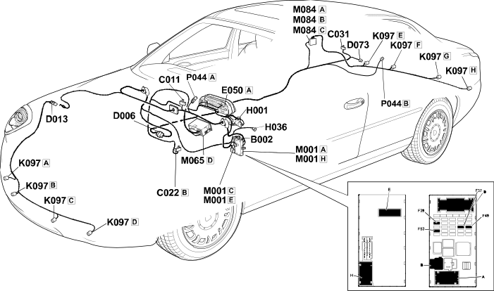

E3090 PARKING SENSORS LOCATION COMPONENTS
- Path
- Electrical equipment > ELECTRICAL FUNCTIONS > E30 ELECTRICALLY ACTIVATED DEVICES > E3090 PARKING SENSOR > E3090 PARKING SENSORS LOCATION COMPONENTS
- Kind
- topic
- Applies to
- all engines; all production periods
- Interactive page
- https://sloeber94.github.io/elrnDB-lThss/en/#/841004680
Applies to: all engines; all production periods
Location Components

Components
Component code | Name | Assembly reference |
|---|---|---|
Junction unit under dashboard | - | |
Right front earth | - | |
Centre dashboard earth | - | |
Right rear earth | - | |
Front/rear coupling | - | |
Front/bumper coupling | - | |
- | ||
Instrument panel | - | |
Ignition switch | - | |
Controls on tunnel | - | |
Parking sensors | - | |
Body computer | - | |
Info-telematic control unit (NIT) | 5580P | |
Parking sensor control unit | - | |
Parking sensor speaker | - |
Topics linked from this page (15)
- B002 Junction unit under dashboard
- C011 Right front earth
- C022 Centre dashboard earth
- C031 Right rear earth
- D006 Front/rear coupling
- D013 Front/bumper coupling
- D073 Trailer preparation coupling
- E050 Instrument panel
- H001 Ignition switch
- H036 Controls on tunnel
- K097 Parking sensors
- M001 Body computer
- M065 Info-telematic control unit (NIT)
- M084 Parking sensor control unit
- P044 Parking sensor speaker